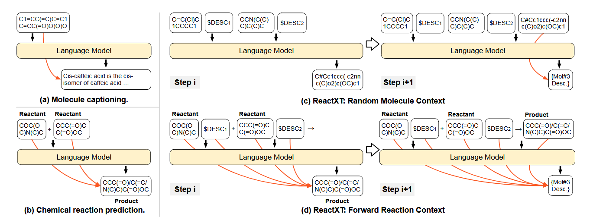
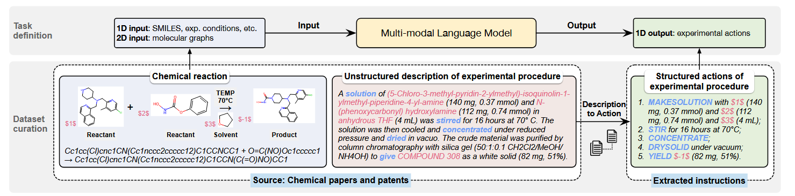
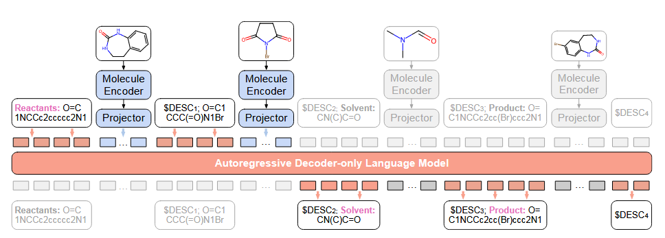
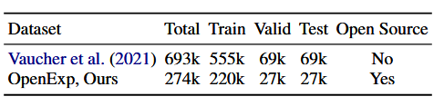
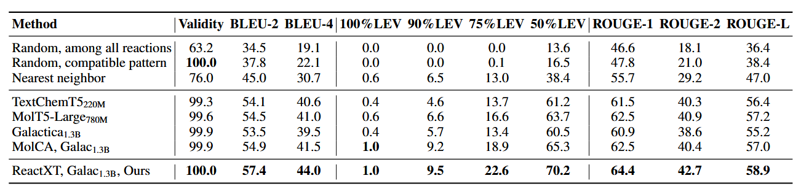
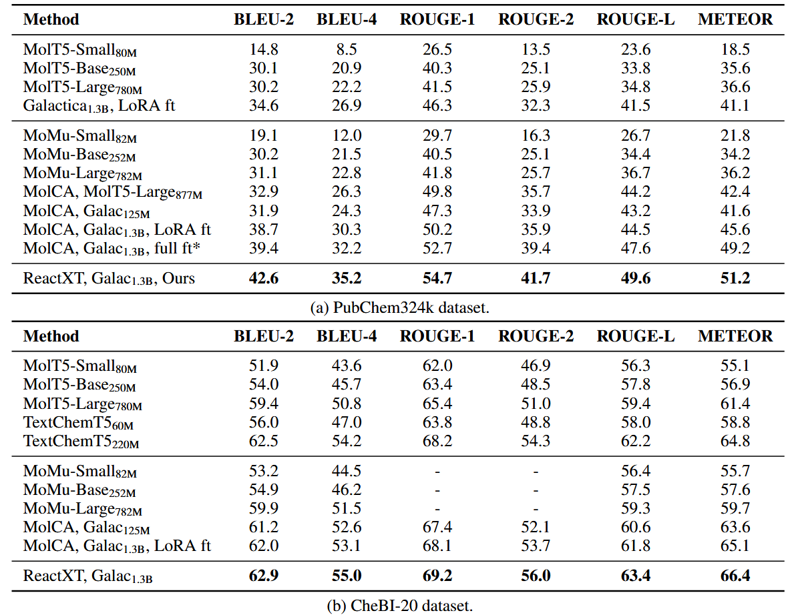
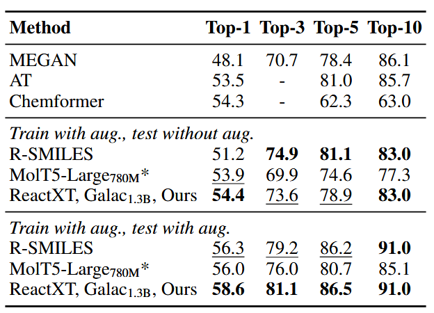

化学反应的自动化与智能化是药物发现和材料科学的核心挑战之一。现有研究多聚焦于单个分子的文本建模（如分子描述生成）或单纯基于分子结构的反应预测，但缺乏对化学反应与文本联合建模的探索。例如，实验步骤预测（预测合成某化合物的具体操作流程）因缺乏开源数据集而进展缓慢。为此，本文提出了一种名为ReactXT的预训练方法，结合化学反应上下文与分子文本信息，显著提升了语言模型（LM）在实验步骤预测、分子描述生成和逆合成等任务中的表现，并推出了首个开源实验步骤预测数据集OpenExp。
摘要: 分子文本建模是一个新兴的研究方向，旨在通过文本界面和文本知识促进分子相关任务。除了单分子，研究反应文本建模有望帮助合成新材料和药物。然而，之前的研究大多忽视了反应文本建模：它们主要关注对单个分子文本对的建模，或者在没有文本的情况下学习化学反应。此外，由于缺乏开源数据集，反应文本建模的一个关键任务——实验过程预测——的探索较少。该任务是预测进行化学实验的逐步行动，对于自动化化学合成至关重要。为了解决上述挑战，我们提出了一种新的预训练方法ReactXT用于反应文本建模，并提出了一个新的数据集OpenExp用于实验过程预测。具体来说，ReactXT具有三种类型的输入上下文，用于增量预训练LM。三个输入上下文中的每一个都对应一个预训练任务，以提高对反应或单个分子的基于文本的理解。ReactXT在实验程序预测和分子标题方面表现出持续的改进，并在逆向合成方面提供了有竞争力的结果。代码可以在https://github上找到。
研究背景与动机
Reaction-Text Modeling (RTM) 是一种新兴的研究方向，旨在通过结合化学反应与文本信息，提升语言模型（Language Models, LMs）在化学反应相关任务中的表现。RTM的核心目标是通过文本接口和文本知识来增强对化学反应的理解和应用，从而推动药物发现、材料科学等领域的自动化进程。
回顾之前的工作，本文确定了反应文本建模（reaction-text modeling, RTM）学习范式和评估基准中的关键研究差距：
- Learning Paradigm
大多数先前的工作要么专注于生成单个分子的文本描述（参见图1a），要么将LM应用于化学反应预测，而不包括上下文中分子/反应的文本描述（参见图1b）。这种方法忽略了文本描述中提高性能的潜在知识。Pioneer工作包括在提示ChatGPT时标记分子作用和实验条件，但由于仅限于提示工程，其性能并不理想。

👆 分子文本生成建模方法的比较。橙色箭头表示生成的化学关系。为了简单起见，这里省略了2D图嵌入，但为了提高性能，将其添加到最终框架中$DESC_j表示第j个分子的描述。图（b）和（d）中的化学反应为：COC（OC）N（C）C+CCC（=O）CC.
- Evaluation Benchmark
用于实验程序预测的开源数据集明显缺失。如下图所示👇，实验步骤预测旨在通过解释化学反应推导出实验执行的步骤操作，这对化学合成过程的自动化具有重要价值。这项任务与我们关注的 RTM 非常吻合，需要对化学反应有一定的了解，并需要一个文本界面来阐明实验步骤。遗憾的是，公共数据集的缺乏阻碍了这一领域的进一步研究和发展。

👆实验程序预测任务及其数据集管理过程的说明。我们采用（Vaucher等人，2021）定义的动作和（Christofidellis等人，2023）的动作模型描述。
🌟 核心突破
ReactXT是一种全新的分子-文本预训练模型，专为化学反应设计。它不仅能理解分子结构，还能结合专利文本、物化性质，自动生成 step-by-step 实验步骤。例如，输入目标产物，模型可输出“先加催化剂，再控温搅拌”等操作，堪比化学家的实验笔记！
- 反应情境化的输入上下文设计
ReactXT通过三种输入上下文结构指导语言模型学习：
- 前向反应上下文：正向反应上下文根据分子在反应中的作用（反应物、催化剂、溶剂和产物）标记分子，并按照特定的顺序排列它们。（并非每个反应都有催化剂或溶剂）。对于每个分子，在其SMILES后附加其2D分子图嵌入（例如<Mol1>），以增强LM对分子结构的理解；并在2D分子图嵌入后附加分子描述（例如$DESC1）以将分子与文本对齐。模型需预测分子在反应中的角色及其描述，从而学习反应原理（如质量守恒）。

👆 反应情境化分子文本预训练的说明。示例使用正向反应上下文。
构建正向反应上下文是为了学习参与同一反应的分子之间的化学联系。这些联系是基于化学反应原理，如守恒定律。基于这种分子相互作用，我们假设了解同一反应中的其他分子及其描述可以帮助预测当前的分子及其文本描述。ReactXT鼓励LMs利用这些分子间关系来提高他们在反应中生成分子描述的能力，从而加深他们对化学反应原理的理解。
- 后向反应上下文：与前向反应上下文类似，但是分子角色的顺序颠倒了，这样子缓解了语言模型的“反转诅咒”（在“A是B”上训练的LMs无法推广到“B是A”）。反向泛化至关重要，因为下游应用包括反向逆转录合成。
- 随机分子上下文：随机组合无关分子，强化模型对单个分子的独立理解能力。
- 平衡采样策略
化学数据集中常见分子分布极不均衡（如少数分子高频出现）。ReactXT通过加权采样调整反应和分子的选择概率：
- 反应权重：与反应中分子出现频率的倒数成正比，倾向于选择包含低频分子的反应。
- 分子权重：在选定反应中，低频分子被更高概率选中。
此策略使模型在预训练中更均衡地学习各类分子特征，避免高频分子的主导效应。
- 多模态语言模型架构
ReactXT以MolCA为骨干模型，融合1D SMILES序列与2D分子图信息。具体来说，图神经网络（GNN）编码分子图结构，通过跨模态投影器将其映射至语言模型（Galactica）的输入空间，实现分子结构与文本的联合建模。
数据集构建：OpenExp
OpenExp是首个开源的实验步骤预测数据集，提供274439对化学反应及其相应的实验程序分步说明，包含274,439个反应-步骤对，数据来源为USPTO专利库和开放反应数据库（ORD）。其构建过程包括：
- 文本到结构化动作的转换：利用预训练模型将专利中的非结构化实验描述转化为标准化的动作序列（如“添加”“搅拌”“浓缩”）。
- 分子实体对齐：通过IUPAC名称与SMILES匹配，确保实验步骤中的分子与反应方程中的物质一一对应。
- 数据清洗：过滤低质量样本（如高困惑度文本、多产物反应），并进行去重和动作聚合。
- 人工评估：邀请化学专家对250个样本评分，结果显示50%的样本无需修改即可执行，90%仅需微调，验证了数据的高可靠性。

👆 数据集统计和与先前工作的比较。
实验结果与性能
ReactXT在三个下游任务中表现卓越：
- 实验步骤预测（OpenExp）
- 在BLEU-4、ROUGE-L等指标上超越MolT5、Galactica等基线模型，最高提升3.3%。
- 关键改进源于对反应上下文的建模，例如模型能准确预测“添加催化剂后搅拌”等操作顺序。

👆 OpenExp数据集上实验程序预测性能的比较（%）。下标表示每个模型的参数大小。对所有模型进行全参数微调。
ReactXT在所有指标上都始终优于基线。具体来说，它在BLEU-2和75%LEV上分别超过了基线2.2%和3.3%，证明了ReactXT在基于文本的反应理解方面的有效性。
- 分子描述生成（PubChem324k）
- BLEU-2和ROUGE-2分别提升3.2%和2.3%，表明模型对单个分子的物化性质（如溶解度、熔点）理解更深入。

👆 PubChem324k和CheBI-20数据集上的分子字幕性能（%）。*表示我们的重新实施。其他基线结果借鉴自（Liu等人，2023b；Christofidellis等人，2023）。
我们可以观察到，ReactXT始终优于基线。具体而言，ReactXT在PubChem324k上的BLEU-2和ROUGE2评分分别提高了3.2%和2.3%，在CheBI-20上的ROUGE-2评分提高了1.7%。这些改进强调了我们的预训练方法在增强对单个分子的理解方面的有效性。
- 逆合成（USPTO-50K）
- 在Top-1准确率上达到58.6%，优于R-SMILES等专用模型，证明反应上下文学习能有效捕捉反应逆向逻辑。

👆 USPTO-50K上的逆合成准确率（%）。*表示我们的重新实施。其他基线来自（Zhong等人，2022）。在每个部分中，粗体表示最佳结果，下划线表示次佳结果。
应用前景
- 自动化实验室：结合机器人执行ReactXT生成的步骤，实现7×24小时无人合成。
- 药物研发加速：快速验证新化合物合成路径，缩短从分子设计到实验验证的周期。
- 化学教育：为学生提供可视化的反应操作指南，降低实验门槛。